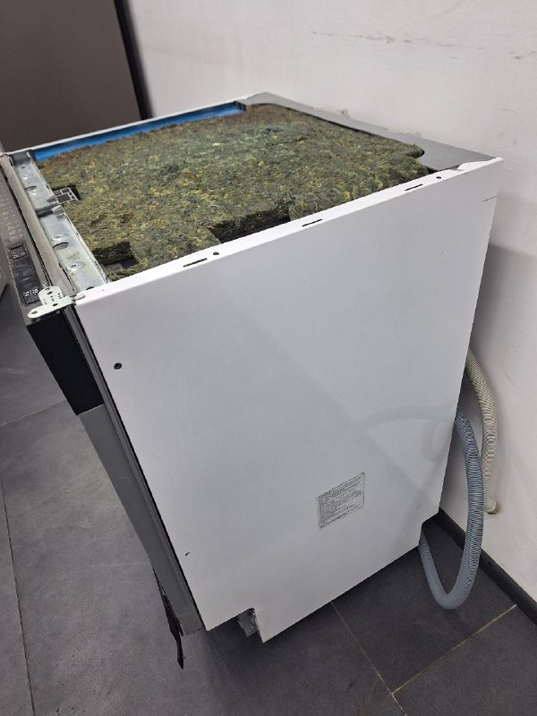
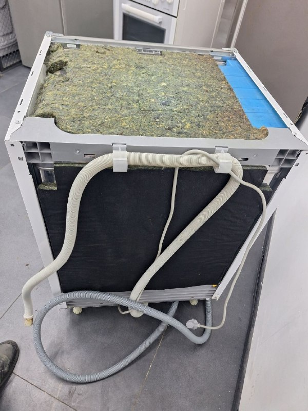
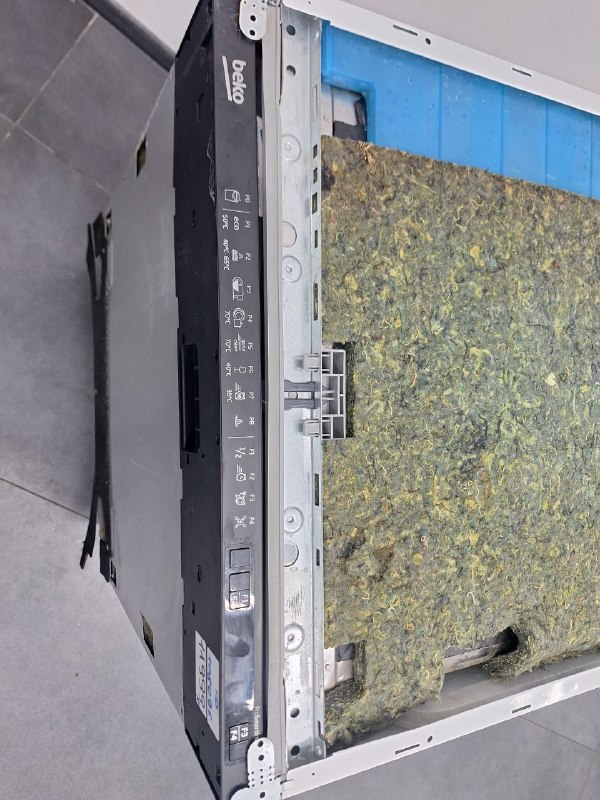

Посудомоечная машина Beko DIN28321
11 999 грн
ID 108095 · Б/у · В наличии · Гарантия 3 месяца
ID108095
Цена 11999 грн
Beko
DIN28321
До 15 комплектов
Высота 85 см
Ширина 60 см
Глубина 55 см
Гарантия 3 месяца
Ул. Вадима Гетьмана, 1